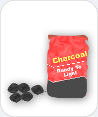

|  |
Charcoal
Chemicals you may find: Carbon Ash and other chemicals |
| Charcoal light, soft, brittle solid fuel mostly produced by heating wood in absence of oxygen. It consists of more than 80% carbon. Additional components may be ash and other chemicals. Charcoal is not only used as fuel but also in art and drawing, as well as for gunpowder, for filters (e.g., gas masks and water filters) | |